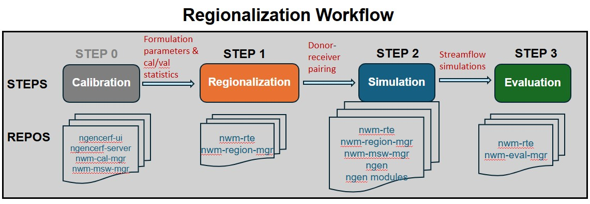
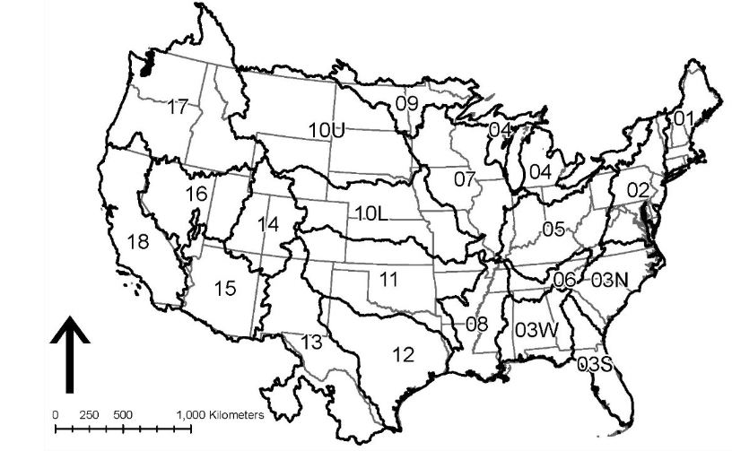

User Guide#
Overview of regionalization workflow#
The regionalization workflow includes the following steps:
STEP 0: run calibration and collect formulation prameters and calibration/validation statistics
STEP 1: formulation & parameter regionalization (via nwm-region-mgr)
STEP 2: regionalized NGEN simulation setup (via nwm-mswm-mgr) and execution
STEP 3: evaluation of regionalized simulations (via nwm-eval-mgr)

Run regionalization with NWM-RTE in INT/EA/UAT Clusters#
In the INT/EA/UAT clusters, all software dependencies for regionalization are installed and managed through
NWM-RTE (Run Time Environment, /ngencerf-app/nwm-rte). Regionalization workflows are executed via docker containers using an
nwm-rte image.
Note prior to running the regionalization workflow, make sure your user account has permissions to access the docker socket and pull images from the registry. Refer to the Docker permissions subsection below for details.
Test the sample regionalization workflow#
Navigate to your preferred working directory (e.g.,
/ngen-oe/$USER/run_region,/ngen-dev/$USER/run_region, or~/run_region).Copy sample config files from
/ngencerf-app/nwm-region-mgr/configs/to your working directory., e.g.,
cd /ngen-oe/$USER/run_region # or your preferred working directory
cp -r /ngencerf-app/nwm-region-mgr/configs .
Run the three regionalization steps below sequentially using one of the two scripts in nwm-rte.
(RECOMMENDED)
sbatch_run_region.sh: submitting jobs to compute nodes in INT/EA/UAT via SBATCH. See RTE documentation here for details on usage and available options.(TEST ONLY)
run_region.sh: running jobs directly in the controller node or local AWS workspace for small regions or testing purposes. See RTE documentation here for details on usage and available options.
Step 1. Run regionalization#
a) Run formulation regionalization alone (no parreg):
Typically this step can be skipped since parameter regionalization also runs formulation regionalization as a prerequisite. Prior to running, configure the settings in configs/config_general.yaml and configs/config_formreg.yaml.
# submit to compute nodes on INT/EA/UAT
/ngencerf-app/nwm-rte/sbatch_run_region.sh configs formreg
# or run directly in controller node or local AWS workspace
time /ngencerf-app/nwm-rte/run_region.sh -c configs --formreg
b) Run parameter regionalization (formreg is also run as a prerequisite):
Prior to running, configure the settings in configs/config_general.yaml, configs/config_formreg.yaml and configs/config_parreg.yaml.
# submit to compute nodes on INT/EA/UAT
/ngencerf-app/nwm-rte/sbatch_run_region.sh configs parreg
# or run directly in controller node or local AWS workspace
time /ngencerf-app/nwm-rte/run_region.sh -c configs --parreg
Step 2. Run NGEN#
Run NGEN simulations. Prior to running, configure the settings in configs/config_general.yaml and configs/config_ngen.yaml.
# submit to compute nodes on INT/EA/UAT
/ngencerf-app/nwm-rte/sbatch_run_region.sh configs ngen
# or run directly in controller node or local AWS workspace
time /ngencerf-app/nwm-rte/run_region.sh -c configs --ngen
Step 3. Run Evaluation#
Run an evaluation. Prior to running, configure the settings in configs/config_eval.yaml.
# submit to compute nodes on INT/EA/UAT
/ngencerf-app/nwm-rte/sbatch_run_region.sh configs eval
# or run directly in controller node or local AWS workspace
time /ngencerf-app/nwm-rte/run_region.sh -c configs --eval
Run all steps in one command#
Users may prefer running the above steps sequencially so they can inspect the outputs from each step before proceeding to the next step. However, it is possible to run all three steps in one command as shown below:
# submit to compute nodes on INT/EA/UAT
/ngencerf-app/nwm-rte/sbatch_run_region.sh configs parreg ngen eval
# or run directly in controller node or local AWS workspace
time /ngencerf-app/nwm-rte/run_region.sh -c configs --parreg --ngen --eval
Note: When using run_region.sh, the short flags -f, -p, -n, and -e can also be used in place of --formreg,
--parreg, --ngen, and --eval, respectively. The short flags are not supported when using sbatch_run_region.sh.
# run all steps with short flags (only for run_region.sh)
time /ngencerf-app/nwm-rte/run_region.sh -c configs -f -p -n -e
Run regionalization with a specific RTE image tag#
By default, the nwm-rte image with tag latest will be used to run the regionalization workflow. To use a specific
image tag (e.g., for testing with a new image), set the variable image_tag in the script as shown below:
# run all steps with sample configle and a specific image tag
/ngencerf-app/nwm-rte/sbatch_run_region.sh /ngencerf-app/nwm-region-mgr/configs parreg ngen eval --image-tag pr-22-build
Customize and run your own regionalization workflow#
Prior to running your own regionalization workflow, it is hightly recommded to review documentation on Technical Reference and Configuration, as well as the Notes and best practices below, to understand the available configuration options and how to customize the workflow for your specific application.
Prepare input data files. Refer to the Input Data subsection for details.
Calibration/validation statistics can be collected from earlier ngenCERF calibration runs using the commands below, which will generate a csv file (in your current run directory) containing the statistics for all specified calibration job IDs, along with another csv file listing the corresponding calibrated parameter sets. These files can then be used in the regionalization configuration files.
ngencerf regionalization 609 610 # where 609 and 610 are example calibration job IDs # or specify a list of calibration job IDs in a text file ngencerf regionalization --id-file job_ids.txt
Adjust configuration files in
configs/to set up your desired regionalization experiment. Refer to the Configuration tab for details on each config file and available options.Follow Steps 1-3 above to execute the regionalization workflow.
Example application: comparing different regionalization methods#
In this section, we will walk through an example application where we compare gower vs. kmeans clustering for parameter regionalization in VPU 09 (see CONUS VPU map in Paratermeter regionalization), using selected ngen and StreamCat attributes.
0. Prepare configuration files#
We will start from the sample workflow above. First copy the configuration files to a new folder to avoid overwriting the original files, e.g.:
cp -r configs/ test1_configs/
0.1 Update test1_configs/config_general.yaml#
Set general.vpu to ‘09’
Set general.run_name to a new name: test1. This will be used to name the output folder for this experiment (e.g.,
outputs/region/test1/)
0.2 Update test1_configs/config_parreg.yaml#
Set general.attr_dataset_list to [‘ngen’,’streamcat’] as the attribute datasets for computing catchment similarity
Set general.algorithm_list to [‘gower’, ‘kmeans’]. This will run parameter regionalization using both algorithms sequentially.
Set donor.buffer_km to 100 (instead of 200) to use a smaller donor search neighbourhood (around the VPU) for this experiment
Select specific attributes from each dataset using the attribution selection file
copy sample attribute selection files from
/ngencerf-app/nwm-region-mgr/data/inputs/region/attr_config/to working directory
cp -r /ngencerf-app/nwm-region-mgr/data/inputs/region/attr_config .
For ngen: use the file
attr_selection_ngen.csv. Set the select column to 1 for desired attributes and to 0 for others. Here we select all available ngen attributes except for centroid_x, centroid_y, impervious, ISLTPY, and IVGTYP. Then upate the field attr_datasets.ngen.attr_select_file to reflect the new location of this file (e.g.,{base_dir}/attr_config/attr_selection_ngen.csv).For streamcat: use the file
attr_selection_streamcat.csv. Set the select column to 1 for desired attributes and to 0 for others. Here we select the following attributes: BFI, DamDens, Perm, RckDep, WtDep, PctCarbResid, PctEolCrs, PctWater, Precip, Tmax, Tmean, Tmin, RdDens, Runoff, Clay, Sand, Precip_Minus_EVT. Then update the field attr_datasets.streamcat.attr_select_file to reflect the new location of this file (e.g.,{base_dir}/attr_config/attr_selection_streamcat.csv).Alternatively, we can also specify selected attributes directly in the config file by editing the fields attr_datasets.ngen.attr_list and attr_datasets.streamcat.attr_list, respectively, for ngen and StreamCat.
Set donor.metric_eval_period.value to ‘valid’ to use validation period statistics for donor selection
Set snow_cover.threshold to 10 to define catchment snowiness category based on 10% (mean annual) snowcover
Edit output.params.plots.columns_to_plot to include a couple of CFE parameters to visualize spatial patterns (e.g., ‘b’ and ‘slope’)
Edit output.attr_data_final.plots.columns_to_plot to include some selected attributes to visualize spatial patterns. Specifically,
remove the HLR attributes, since HLR is not chosen for this experiment
change streamcat_Elev to streamcat_Perm, since Elev is not selected in attr_datasets.streamcat.attr_list
add a few ngen attributes: ngen_slope, ngen_aspect, ngen_elevation Note here the attribute names should be prefixed by their dataset names (e.g., ‘ngen_’ or ‘streamcat_’).
Set algorithm.algo_general.max_spa_dist to 1000 to limit the maximum spatial distance for donor selection to 1000 km
Set algorithm.gower.max_attr_dist to 0.3 to allow a larger maximum attribute distance for donor selection when using gower method. Attribute distances ranges from 0 to 1, with smaller values indicating higher similarity.
Set algorithm.kmeans.n_init to 5 to increase the number of random initializations for more robust clustering results (with slightly increased computational cost).
1. Run regionalization#
Run the regionalization step as in Step 1 above, using the updated configuration files in test1_configs/.
/ngencerf-app/nwm-rte/sbatch_run_region.sh test1_configs parreg
Execution time will take 10-20 minutes depending on available computational resources. While running,
intermediate log messages will be printed to the terminal, while also being written to the log file
outputs/region/test1.log, as specified in config_general.yaml.
After completion, check the output folder outputs/region/test1/, which contains sub-folders for
attr_data_final/: files and plots for catchment attributes used in regionalizationformulations/: regionalized formulation files and diagnostic plotsparams/: regionalized formulation and parameter files and plots for each algorithm, with file names indicating the algorithm usedpairs/: donor-receiver pair files for each algorithmspatial_distance/: matrices of spatial distances between receiver (row) and donor (column) catchmentssummary_score/: summary score for all donor candidatesconfig_formreg_final.yamlandconfig_parreg_final.yaml: the final (expanded) configuration files used in this run.
See the Output Directory Structure subsection in the Technical Reference tab for details on the output directory structure.
See the Output Tables and Output Plots subsections in the Technical Reference tab for details on output files and plots.
2. Run NGEN simulations#
In this experiment, we will run NGEN simulations using the parameter sets derived from both gower and kmeans methods, respectively.
First, update the test1_configs/config_ngen.yaml file as follows:
Set algorithm_list to
['gower']for the first runSet start_time and end_time to define the simulation period (e.g., ‘2020-10-01T00:00:00’ to ‘2020-10-03T00:00:00’). Here for demonstration purposes we use a 2-day period in October 2020.
The other fields can remain unchanged.
Run the NGEN simulation step as in Step 2 above.
/ngencerf-app/nwm-rte/sbatch_run_region.sh test1_configs ngen
After completion, the simulation outputs will be saved in the folder
outputs/ngen/regionalization/test1_gower/vpu09/Output/, where the streamflow outputs can be found in the file troute_output_202010010000.nc. Note that the sub-folder name test1_gower includes the run_name (here test1) and the algorithm used (here gower).
Next, update the test1_configs/config_ngen.yaml file again to set algorithm_list to ['kmeans'] for the second run, while keeping other fields unchanged. Run the NGEN simulation step again.
After completion, the simulation outputs will be saved in the folder
outputs/ngen/regionalization/test1_kmeans/vpu09/Output/, where the streamflow outputs can be found in the file troute_output_202010010000.nc.
Depending on available computational resources, each NGEN simulation may take up to an hour or more to complete.
Alternatively, you can also run NGEN simulation for both gower and kmeans methods in a single run by setting algorithm_list to ['gower', 'kmeans'].
3. Run evaluation#
Finally, we will evaluate the two NGEN simulations against observed streamflow data.
Update the configs/config_eval.yaml file as follows:
Set general.location_set_name to vpu_09
Set general.dataset_name to [test1_kmeans, test1_gower]. This defines the names of the two datasets to be evaluated and intercompared, corresponding to the two algorithms used in parameter regionalization.
Set general.nwm_version to [ngen, ngen]. Both simulations use the ngen configuration.
Set general.fcst_start_date and general.fcst_end_date to define the simulation period (e.g.,
'2020-10-01T00:00:00'to'2020-10-03T00:00:00'), consistent with the simulation period used above. Both fields should be lists with the same length as dataset_name, e.g.,forecast_start_date: ['2020-10-01 00:00:00', '2020-10-01 00:00:00'] forecast_end_date: ['2020-10-03 00:00:00', '2020-10-03 00:00:00']
Set general.eval_start_date and general.eval_end_date to define the evaluation period (e.g.,
'2020-10-02 00:00:00'to'2020-10-03 00:00:00'). Here we use an 1-day evaluation period (October 2, 2020), to allow a 1-day spin-up period. Both fields should be lists with the same length as dataset_name.Set file_paths.output_dir to point to the directory where evaluation outputs should be saved. Here we add the run_name from regionalization
test1(e.g.,'{base_dir}/outputs/eval/test1/{location_set_name}'), to ensure evaluation outputs are also organized by regionalization runs.Update fields in metics and plotting sections as desired. Here we will compute and plot a set of default evaluation metrics: KGE (Kling-Gupta Efficiency), NSE (Nash-Sutcliffe Efficiency), NNSE (Normalized NSE), and Correlation (CORR). Note the lead_times fields are not applicable here since we are evaluating simulations.
Note: if you would like to explore other configuration options for evaluation, refer to nwm-eval-mgr documentation for details.
Run the evaluation step as in Step 3 above.
/ngencerf-app/nwm-rte/sbatch_run_region.sh test1_configs eval
After completion, evaluation results will be saved in the folder data/outputs/eval/test1/vpu_09/, including
joined/: combined observed and simulated streamflow data for all locations in parquet format; each file corresponds to one dataset (i.e., algorithm)metrics/: evaluation metrics tables for all locations in parquet format; each file corresponds to one dataset (i.e., algorithm)plots/ngen_simulation/: evaluation plots for all locations, comparing the two algorithmsboxplot/: boxplots of evaluation metrics across all locationshistogram/: histograms of evaluation metrics across all locationsspatial_map/: spatial maps of evaluation metrics for each algorithm
test1_gower/ngen_simulation/: streamflow time series data for all locations using gower methodtest1_kmeans/ngen_simulation/: streamflow time series data for all locations using kmeans methodusgs/: observed streamflow time series data for all locationsnwm_eval_config_expanded.yaml: the final (expanded) configuration file used in this run.
Check the metrics and plots to compare/analyze the performance of the two algorithms in parameter regionalization.
Notes and best practices#
Formulation regionalization#
Configuration for formulation regionalization is specified in
config_general.yamlandconfig_formreg.yaml.The python module
nwm_region_mgr.formregcontains functions for performing formulation regionalization.Formulation regionalization can be run independently, without requiring parameter regionalization. However, parameter regionalization requires formulation regionalization to be completed first.
If
calib_basins_onlyis set to True in the configuration file, only calibrated catchments will be assigned formulations. During parameter regionalization, donors will be selected for uncalibrated catchments without any formulation constraints, i.e., any calibrated catchment is eligible as a donor. Othwerwise, ifcalib_basins_onlyis set to False, eligible donors will be limited to only those calibrated catchments that share the same formulation as the uncalibrated catchment.Currently, formulation regionalization relies on calibration/validation statistics only. In the future, additional criteria (e.g., physiographic similarity) may be incorporated into the formulation selection process.
Parameter regionalization#
Configuration for parameter regionalization is specified in
config_general.yamlandconfig_parreg.yaml.The python module
nwm_region_mgr.parregcontains functions for performing parameter regionalization.Currently, four attribute datasets are supported:
NextGen attributes (available for all domains)
Hydrologic Landscape Regions (HLR) attributes(only available for conus, ak, and hi domains)
StreamCat attributes (only available for conus)
HydroATLAS attributes (available for all domains except hi)
Users can choose to use any combination of these datasets for regionalization, depending on their availability and relevance to the region of interest. For example, for the AK domain, since HLR and StreamCat attributes are not available, users can choose to use NextGen and HydroATLAS attributes for regionalization.
Parameter regionalization is carried out separately for each individual VPU, to avoid potential memory issues and algorithm inefficiency. An VPU is equivalent to a HUC2 region, except for HUC-03 and HUC-10 that are divided into multiple VPUs. The image below shows all the VPUs in the CONUS domain. Each oCONUS domain (Alaska, Hawaii, Puerto Rico) is treated as a single VPU.
{kind=link}

Parameter regionalization requires formulation regionalization to be completed first. Hence, for each parameter regionalization run, the workflow will first check if the required outputs from formulation regionalization for the relevant VPUs already exist; if not, the workflow will run formulation regionalization for the relevant VPUs before proceeding with parameter regionalization.
Parameter regionalization for a given VPU may also rely on formulation-regionalization outputs from neighboring VPUs, depending on whether calibration basins from those VPUs fall within the buffer distance specified in the configuration.
Running regionalization in INT/EA/UAT clusters#
Docker permissions#
When first running the regionalization workflow in INT/EA/UAT clusters, you may encounter permission issues when pulling the nwm-rte image or running the container. This is because your user account may not have permissions to access the docker socket or pull images from the registry. To resolve theses issues, run the following commands from the terminal before submitting your first regionalization job. You only need to do this once, and it will grant the necessary permissions for all future runs.
sudo systemctl status docker # check status
sudo systemctl start docker # start docker service if not already running
sudo usermod -aG docker $USER # add user to docker group
newgrp docker # apply group change without logout/login
Input/output file paths#
The current working directory WORK_DIR and the root directory of all repositories on the host (REPOS_COMMON_ROOT__HOST)
are defined as environment variables and will be mounted to the same paths in the container. The run script run_region.sh
will automatically handle the volume mounting and path mapping between the host and the container.
In config_general.yaml, WORK_DIR and REPOS_COMMON_ROOT__HOST are used by the placeholders {base_dir} and
{static_data_dir}, respectively, which will be automatically replaced with the correct paths when the workflow is run.
As long as you specify file paths for all inputs and outputs in the configuration files using these placeholders, the
workflow will be able to correctly locate the files in the container regardless of where your working directory is on the host.
There is a caveat. The placeholders {base_dir} and {static_data_dir} defined in config_general.yaml are used by
config_formreg.yaml, config_parreg.yaml, and config_ngen.yaml, but not config_eval.yaml, which is processed
separately by nwm-eval-mgr using its own Pydantic model for configuration. However, you can redefine {base_dir}
in config_eval.yaml and use the two environment variables WORK_DIR and REPOS_COMMON_ROOT__HOST to specify file paths.
By default, {static_data_dir} is set to the input data folder installed on the host (e.g., /ngencerf-app/nwm-region-mgr/data/inputs/), which is the root directory for all static input data for regionalization (e.g., hydrofabric, catchment
attributes, crosswalk file between calibration gages and NextGen catchments, pseudo calibration/validation statistics
for testing, etc). In INT/EA/UAT clusters, the user will not have write access to this directory. If you would like to
use custom input data (e.g., your own calibration statistics), you can copy the data to your working directory and
update the relevant file paths in the configuration files to point to the new location. For example, if you have your
own calibration statistics and parameters saved in your working directory in inputs/my_stats.csv and inputs/my_params.csv,
you can update the file path in config_general.yaml as follows:
general.calib_stats_file: '{base_dir}/inputs/my_stats.csv'
general.calib_params_file: '{base_dir}/inputs/my_params.csv'
By default, all outputs from the regionalization workflow will be saved in the outputs/ folder in your working
directory. You can also specify a different output directory in the configuration files if desired, as long as it is
within your working directory. For formulation/parameter regionalization and ngen simulation steps, the output directory
is specified in the output section of config_formreg.yaml, config_parreg.yaml and config_ngen.yaml, respectively.
For the evaluation step, the output directory is specified in the file_paths.output_dir field in config_eval.yaml.
Compute resources#
Currently, each regionalization job can only run on a single compute node in the INT/EA/UAT clusters. Two partitions
are available in these clusters: c5n-9xlarge and r8a-12xlarge. Each partition contains 50 compute nodes, with 18
CPUs per node for c5n-9xlarge and 48 CPUs per node for r8a-12xlarge.
Regionalization jobs are submitted to a partition based on the number of parallel processes (n_procs) specified in
the config file config_general.yaml, as follows:
If n_procs <= 18, the job is submitted to the
c5n-9xlargepartitionIf 18 < n_procs <= 48, the job is submitted to the
r8a-12xlargepartitionIf n_procs > 48, the job is not submitted and an error message is raised, since a single compute node supports a maximum of 48 CPUs.
To fully utilize available computational resources, it is recommended to set n_procs to match the number of CPUs per node:
Use n_procs = 18 for the c5n-9xlarge partition.
Use n_procs = 48 for the r8a-12xlarge partition.
Note the partition configuration in these clusters may change in the future (use sinfo to check the current configuration).
Job submission#
Regionalization jobs are submitted via the /ngencerf-app/nwm-rte/sbatch_run_region.sh script. There are multiple options to
customize the job submission (see the header of the script for usage details). You can adapt the following bash script
for your needs:
#!/bin/bash
# required argument
CONFIG_DIR="./configs_test"
# Optional arguments to override the defaults
image_tag="pr-22-build" # default: latest. Check available image tags at: https://github.com/NGWPC/nwm-rte/pkgs/container/nwm-rte
pull_image=false #default: false
workflow_options=(parreg ngen eval) #default: parreg. Valid options: formreg, parreg, ngen, eval
dry_run=false #default: false
delete_runtime_dir=false #default: false
# ==== Typically no need to modify lines below ====
SCRIPT_TO_RUN="/ngencerf-app/nwm-rte/sbatch_run_region.sh"
# Build optional arguments
extra_args=()
if [ "$pull_image" = true ]; then
extra_args+=(--pull-image)
fi
if [ "$dry_run" = true ]; then
extra_args+=(--dry-run)
fi
if [ "$delete_runtime_dir" = true ]; then
extra_args+=(--delete-runtime-dir)
fi
"$SCRIPT_TO_RUN" \
"$CONFIG_DIR" \
"${workflow_options[@]}" \
--image-tag "$image_tag" \
"${extra_args[@]}" \
"$@"
Monitoring job status#
After a SLURM job is submitted, you can monitor the job status using:
squeue -u $USER
The job will typically remain in ‘CF’ (configuring) state for a few minutes. Once the job status changes to “R”
(running), you can monitor the progress by reviewing the log file logs/region-${JOB_SUFFIX}-%j.log,
where,
${JOB_SUFFIX}is a string formed by joining the workflows being run with “-”%jis the SLURM job ID.
tail -f logs/region-parreg-ngen-eval-1124.log
To cancel a job after it has been submitted, use the command scancel with the job ID (obtained from squeue), e.g.,
scancel 12345678
Viewing regionalization outputs#
Sample regionalization outputs can be found in Output Plots and Output Tables.
Graphic regionalization outputs are typically saved in png format, which can be easily viewed via a Desktop or VS Code session on INT/EA/UAT.
By default, tabular regionalization outputs are saved in parquet format to increase storage and runtime efficiencies, which can be conviently viewed using an extension (e.g., Parquet Explorer) in VS Code. However, these tools are not readily available on INT/EA/UAT.
There are a couple of options for users to view the outputs:
Option 1: specify csv format for outputs in the config files
config_formreg.yamlandconfig_parreg.yaml(e.g.,output.pairs.format: 'csv'), which will allow you to save the outputs directly in csv format, e.g.,
output.pairs.format: 'csv'
output.params.format: 'csv'
Option 2: use the utility script
view_parquet.shin nwm-region-mgr to view parquet files. You can copy this script to your working directory, e.g.,:
cp /ngencerf-app/nwm-region-mgr/util_scripts/view_parquet.sh .
The script allows you to:
preview the parquet file
query the file with SQL commands
convert the parquet file to csv format etc.
Check the header of the script for usage instructions.
Regionalization for different domains#
The regionalization workflow is designed to be flexible and adaptable to different domains (conus, ak, hi, prvi), as long as the required input data files are available and the configuration files are properly set up. However, due to differences in data availability and formatting across domains, some adjustments may be needed in the configuration files for different domains.
Sample configuration files for different domains can be found at /ngencerf-app/nwm-region-mgr/:
conus:
configshi:
configs_hiprvi:
configs_prviak:
configs_aks
Valid VPUs for each domain#
CONUS: 21 VPUs (01, 02, 03S, 03N, 03W, 04, 05, 06, 07, 08, 09, 10L, 10U, 11, 12, 13, 14, 15, 16, 17, 18)
AK: treated as a single VPU (id: 19)
HI: treated as a single VPU (id:20)
PRVI: treated as a single VPU (id: 21)
HUC12 hydrofabric for AK domain#
There are a few differences in the HUC12 hydrofabric for the AK domain compared to other domains, which require adjustments in the configuration files, as follows:
config_general.yaml:id_col.huc12should be set tohuc12(vs.huc_12for other domains)config_general.yaml:layer_name.huc12should be set toWBDHU12(vsWBDSnapshot_Nationalfor other domains)config_formreg.yaml:huc12_hydrofabric_fileshould be set to'{static_data_dir}/region/NHDPlusV21/NHD_H_Alaska_State_GPKG.gpkg'
Forcing data source and availability#
The forcing data used for regionalized simulations may differ across domains, depending on the availability of AORC and retrospective forcing datasets. The current workflow is set up to use the following datasets for each domain:
CONUS: AORC (1979-01-01 to 2025-12-31)
AK: NWM retrospective forcing (1981-01-01 to 2019-12-31)
HI: NWM retrospective forcing (1994-01-01 to 2013-12-31)
PRVI: NWM retrospective forcing (2008-01-01 to 2023-06-30)
Hence, in the configuration files config_ngen.yaml and config_eval.yaml, the simulation and evaluation periods
for each domain should be set within the above date ranges to ensure the availability of forcing data.
Attribute dataset availability#
ngen (hydrofabric): all domains
HLR: CONUS, AK, HI
StreamCat: CONUS only
HydroATLAS: CONUS, AK, PRVI
Snow basin categorization#
The current workflow includes a step to categorize catchments into snow vs. non-snow basins based on mean annual
snow cover fraction from the HydroATLAS dataset. However, since HydroATLAS is not available for the HI domain, the field snow_cover.consider_snowness in config_parreg.yaml should be set to False for the HI domain to skip this step.
Output cleanup#
Pair files from regionalization#
In the first step of the workflow (regionalization), the program will first check if the required pair file already
exists for a given run_name, algorithm, and VPU (e.g., outputs/region/test/pairs/pairs_kmeans_conus_vpu03S.parquet).
If the file exists, the program will skip the regionalization process (as indicated in the log file) and use the existing pair file for subsequent steps (e.g., NGEN simulation). This allows users to keep the outputs from previous runs of regionalization and reuse them for NGEN simulations or evaluation, without needing to rerun the regionalization step. However, if you want to
rerun regionalization for a given run_name/VPU/algorithm/ with different settings, you can simply delete or archive the existing pair file, and the workflow will run regionalization again.
Intermediate files from NGEN simulations#
In the second step of the workflow (ngen simulation), each run of ngen over an VPU will generate many catchment and nexus csv files in the output folder (e.g., cat-*.csv, nex-*.csv), which can take up a lot of storage space. It is recommended to clean up these intermediate files after each run of regionalization, unless if you want to keep them for debugging or other purposes. The followup step eval only requires the t-route output file from NGEN simulations. The following bash script can be adapted to clean up the intermediate csv files while keeping the t-route files for evaluation. Note that you should run this script separately for each algorithm (e.g., gower and kmeans) if you have run parameter regionalization with multiple algorithms.
# update with your VPU, run name, and algorithm
VPU=03S
RUN_NAME=test
ALGORITHM=kmeans
# remove all ngen simulation output files except for troute output
find outputs/ngen/regionalization/${RUN_NAME}_${ALGORITHM}/vpu_${VPU}/Output -type f ! -name 'troute_*' -delete
Runtime logs#
In addition to the SLURM job log file saved in the logs/ folder, each run of regionalization will also generate
additional log files in the temporary runtime folder (prefixed with run_time_) in the current working directory.
These files contain more detailed logs for ngen-forcing, ngen, and individual modules for debugging purposes. It is
recommended to manually remove these runtime folders afterwards.
Alternatively, you can use the --delete-runtime-dir flag when running the job submission script to automatically
delete the runtime folder immediately after the run is completed, e.g.,
/ngencerf-app/nwm-rte/sbatch_run_region.sh configs parreg ngen eval --delete-runtime-dir
Note this will delete the entire runtime folder containing the detailed log files, which may be useful for debugging if any issues arise during the run.
Assemble domain results#
After running regionalization for all VPUs in the CONUS domain, the metric results can be assembled to create
evaluation plots for the entire domain. This is done by a single run of the eval step with
the following updates to the config_eval.yaml file:
Set general.assemble_domain to
trueSet general.location_set_name to
conusMake sure general.steps.compute_metrics and general.steps.plot_metrics are set to
true
The run will look for the existing metric results file for each VPU in the CONUS domain (e.g., outputs/eval/vpu_03S/metrics/test_kmeans.ngen.ngen_simulation.metrics.parquet, outputs/eval/vpu_03N/metrics/test_kmeans.ngen.ngen_simulation.metrics.parquet), and assemble them into a single metrics file for the entire domain (e.g., outputs/eval/conus/metrics/test_kmeans.ngen.ngen_simulation.metrics.parquet).
Then, the evaluation plots for the entire domain (excluding VPUs without existing metric files) will be generated based on the assembled metrics file, and saved in the folder outputs/eval/conus/plots/ngen_simulation/.
Manual pairings#
Manual pairings can be specified in the config file config_parreg.yaml to override the algorithm-based donor
selection process for certain receiver catchments. This can be useful when users want to enforce specific
donor-receiver pairs based on their expert knowledge or other considerations. To specify manual pairings,
set the field manual_pairs_file to point to a comma-delimited csv file containing the manual pairings, with
one of the following columns pairs:
receiver_divide_id, donor_divide_id
receiver_divide_id, donor_gage_id
receiver_gage_id, donor_gage_id
receiver_gage_id, donor_divide_id
Each row in the file should be populated with exactly one valid receiver column and one valid donor column.
See sample files in nwm_region_mgr/data/inputs/region/manual_pairs/ for examples of formatting the manual pairings
file. The following examples are all valid formats for the manual pairings file:
receiver_divide_id,receiver_gage_id,donor_divide_id,donor_gage_id
cat-410687,,cat-423550,
cat-410688,,cat-423550,
cat-423248,,,023177483
,02207385,,02314500
,02217475,cat-412526,
receiver_divide_id,donor_divide_id
cat-410687,cat-423550
cat-410688,cat-423550
receiver_gage_id,donor_gage_id
02207385,02314500
Note that the specified manual pairings will be used to update the final donor-receiver pair files, for each allgorithm
specified in general.algorithm_list in config_parreg.yaml. A distSptatial column will be added to indicate the
spatial distance between the donor and receiver catchments for each manual pair, and a tag column will be added to
indicate that these pairs are manually specified. The original pair and parameter files will be saved to backup files
with _original added to the filename. Specifically, the following files will be updated with manual pairings:
pairs/pairs_[ALGORITHM]_[DOMAIN]_[VPU].parquet: thereceiver catchment/dividevsdonor catchment/dividepair filepairs/pairs_[ALGORITHM]_[DOMAIN]_[VPU]_mswm.csv: thedonor gagevsreceiver catchment/dividepair file required by MSWM in the ngen simulation step.params/formulation_params_[ALGORITHM]_[DOMAIN]_[VPU].csv: the donor gage formulation and parameter file required by MSWM in the ngen simulation step.
Run nwm_region_mgr in local environment#
The steps below walk through package installation and workflow configuration in local (non-containerized) environments.
Installation#
Installing nwm_region_mgr requires
Python 3.11
Python venv (typically included with Python)
git
Since nwm_region_mgr is not currently on PyPI, it must be installed from source. To download this repository, run
git clone https://github.com/NGWPC/nwm-region-mgr.git
cd nwm-region-mgr
To get the most up-to-date code, switch to the development branch.
git checkout development
Next, create a virtual environment to isolate the dependencies of this library from your base Python environment.
python3.11 -m venv .venv
source .venv/bin/activate
You will then be able to install nwm_region_mgr. There are a few download variants that users may be interested in.
# Regular package install
pip install .
# Install the package in edit mode (for development)
pip install -e .
# Install the additional dependencies for parameter regionalization
pip install .[parreg]
STEP 1: Run regionalization to produce regionalized parameters and formulations#
1) Set up configuration yaml files#
Three yaml config files are needed to run regionalization
config_general.yaml: general settings for the overall regionalization process.
onfig_formreg.yaml: specific settings for the formulation regionalization process.
config_parreg.yaml: specific settings for the parameter regionalization process.
Follow the sample config files (nwm_region_mgr/configs) to set up the configurations for your regionalization application as needed.
Sample input data can be downloaded from s3://ngwpc-dev/regionalization/inputs
2) Run the regionalization script#
python -m nwm_region_mgr [COFIG_DIR] [REG_TYPE]
Where:
[COFIG_DIR] refers to the directory containing the config files as noted in 1)
[REG_TYPE] refers to the type of regionalization to run, either ‘formreg’ (formulation regionalization only) or ‘parreg’ (parameter regionalization, which also runs formulation regionalization first if not done already). If not specified, the default is ‘parreg’.
python -m nwm_region_mgr configs formreg # to run formulation regionalization only
python -m nwm_region_mgr configs parreg # to run parameter regionalization (and formulation regionalization if not done already)
STEP 2: Run NGEN simulation with regionalized parameters#
To avoid complications from building ngen and its submodules locally, we recommend you always run NGEN simulation with regionalized parameters and formulations from a Docker container. Follow instructions from the Docker Run Time Environment (RTE) section above.
STEP 3: Evaluate NGEN simulation with nwm-eval-mgr#
1) Download and install nwm-eval-mgr#
It is recommended you install nwm-eval-mgr in its own venv.
2) Set up configurations for evaluation#
Follow example config at config_eval.yaml
Sample input data can be downloaded from s3://ngwpc-dev/regionalization/data/inputs/eval
3) Activate venv for nwm-eval-mgr#
source ~/repos/nwm-eval-mgr/venv/bin/activate
4) Run evaluation#
python -m nwm_eval config_eval.yaml
5) Check outputs#
Outputs from evaluation can be found in [output_dir] as specified in config_eval.yaml